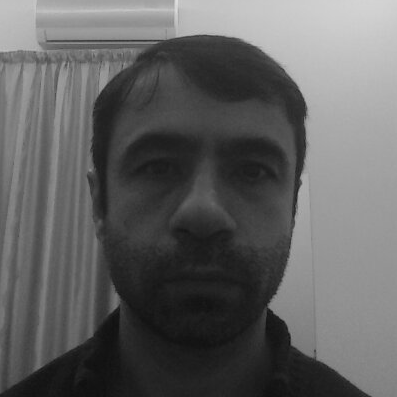

Yusuf KARACA |
 | |
|---|---|---|
| Phone | +306988083143 | |
| ykaraca@gmail.com | ||
| Adres | Athens, GREECE |
| Date and Place of Birth: | August 01, 1976 Malatya/TURKEY |
| ---------------------- | |
| Expertise Field: | Surveillance procedures and technical assistance in organized crime investigations Communication Mobile Device Manager Computer Programmer Operating Systems Web Mastering Network Management CCTV, IP camera, face detection system Ham Radio certification (A class) |
| ---------------------- | |
| Education: | • PhD. Turk Hava Kurumu University-Ankara (thesis stage) • Master of Computer Engineering (Internet & Network) Program Atilim University - Ankara (2002 - 2006) • Police Academy (1994June – 1998June) |
| ---------------------- | |
| Field of Research: | ◦ Computer Crime ◦ Network Security ◦ Web Publishing ◦ Public Safety infrastructure system setup ◦ Surveillance systems |
| ---------------------- |